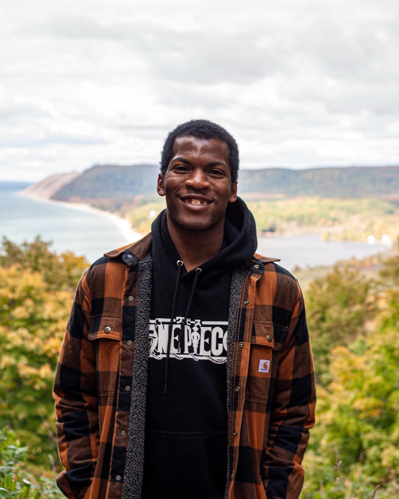
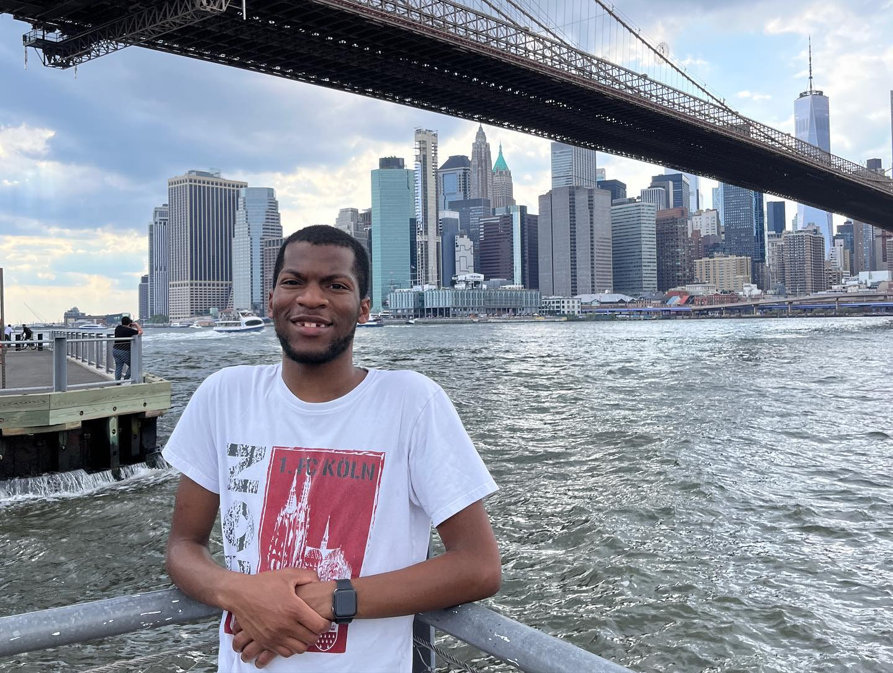
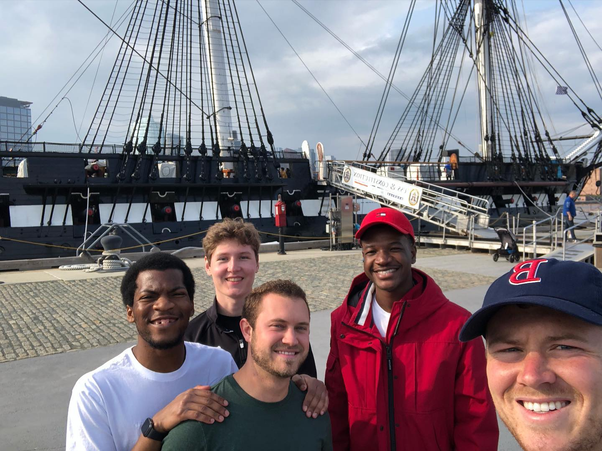

Welcome to theroadlesstraveled.com, your go-to destination for all things pets, recipes, and travel! Explore a world of captivating content where we cater to your love for furry companions, culinary delights, and globetrotting adventures.
Take a deep dive into my wild antics!
Jamauri: The Global Citizen
My name is Jamauri Bryan and I'm currently a graduate student pursuing a Master of Science in Information Science at the University of Michigan.
Since graduating from college, I'm on a mission to explore the world and visit places that I've never been to before. Follow along on this awesome journey!
Photo Gallery
 Hobbies
- Bouldering
- Cultural Exchange
- Learning Foreign Languages